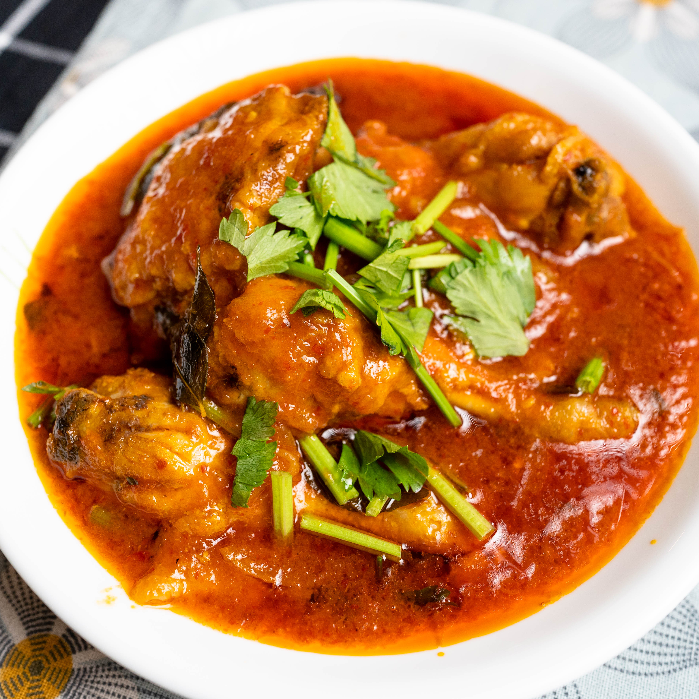

Description
Sumber = Resepi Che Nom
Bahan-bahan untuk kisar halus
- 2-3 biji bawang besar
- 3 ulas bawang putih
- 1 inci lengkuas
- 15-20 tangkai cili kering
- Sedikit air
Bahan-bahan untuk lain
- Minyak masak
- 1 ekor ayam
- 1-2 sudu kecil garam
- 1 sudu kecil serbuk kunyit
- 2 inci halia
- 4 ulas bawang putih
- 2-3 biji bawang merah kecil
- 1 biji bawang merah
- 2 helai daun pandan
- 2 tangkai daun kari
- Rempah 4 sekawan
(1 batang kayu manis,
2 bunga lawang, 6 biji pelaga,
4 cengkih
- Tin Tomato Sup
- Secawan sos cili
- 3 sudu besar madu
- Air untuk lebih berkuah
- Garam secukup rasa
- Tambah perasa (jika ada)
- Daun sup
- 3-4 sudu besar madu (taburan akhir)
Cara
1. Cara-cara untuk ayam
- Gaul ayam dengan garam dan serbuk kunyit.
- Panaskan minyak dan goreng ayam separuh masak.
- Angkat dan tepikan
2. Cara-cara untuk kuah
- Gunting cili kering dan rebus dengan air sehingga mendidih kemudian bilas dan buang biji (boleh juga rendam dalam air panas).
- Hiris nipis halia, bawang putih, bawang merah kecil dan bawang merah besar.
- Daun pandan carik dan simpul
- Potong kasar bawang besar, bawang putih, lengkuas, bawang holland
- Kisar halus bahan potong kasar, cili kering rebus dan air.
- Panaskan minyak kemudian tumis hirisan halia, bawang, daun pandan dan daun kari.
- Masuk rempah 4 sekawan
- Masuk bahan kisar halus dan tumis sampai pecah minyak anggaran 15 minit.
- Masukkan tomato sup, sos cili dan kacau sebati.
- Masukkan ayam goreng dan gaul bersalut sekata.
- Masukkan madu, garam, perasa (jika suka) dan air (untuk lebih berkuah).
- Reneh api pelahan 5-10 minit.
- Tabur daun sup, tutup api dan masukkan lagi madu (taburan terakhir).